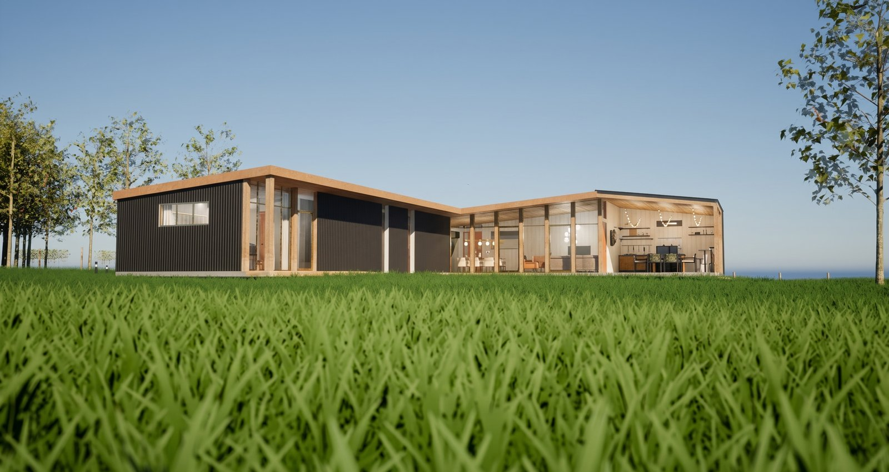
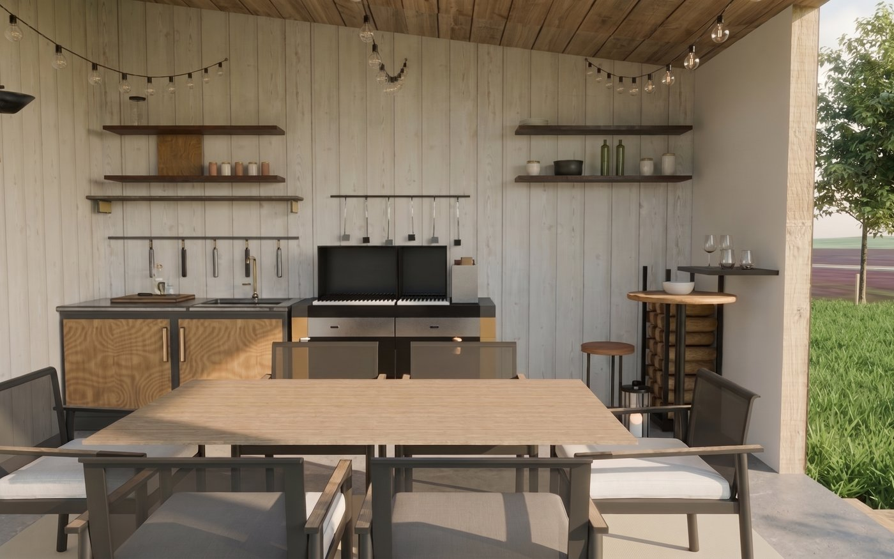
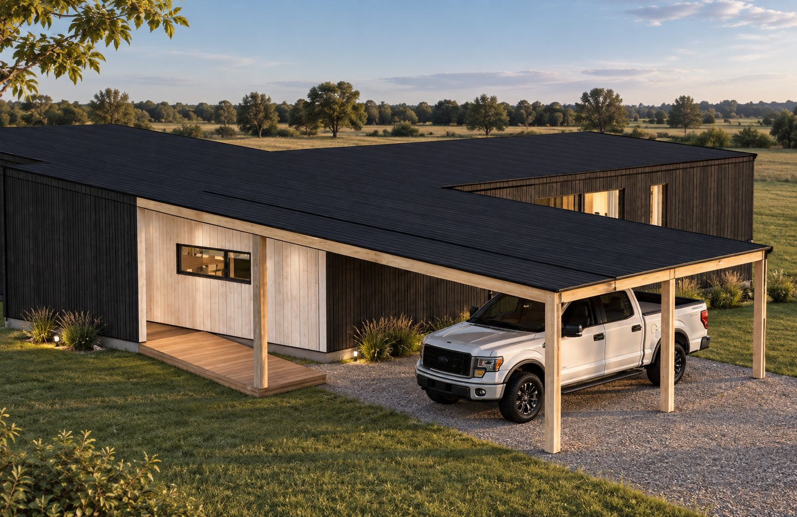
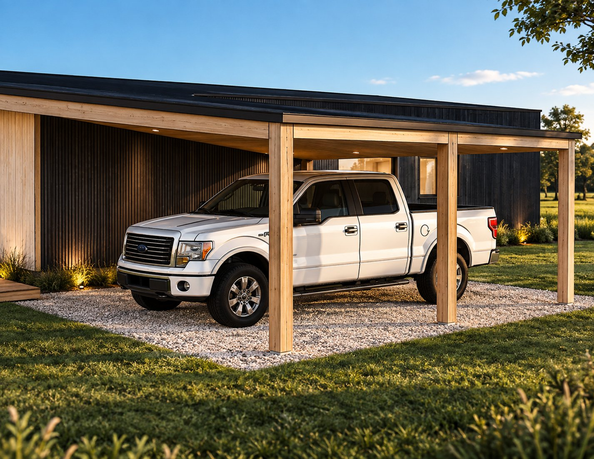
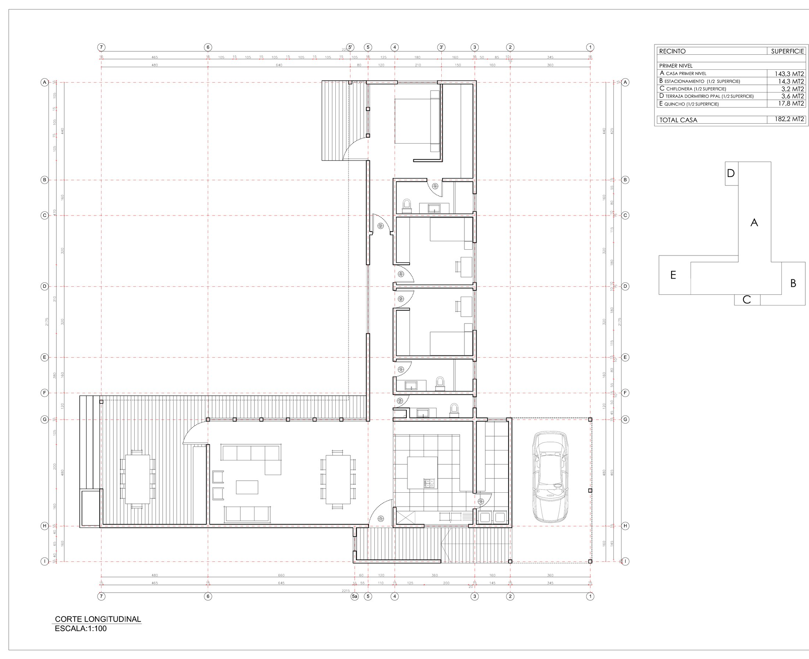
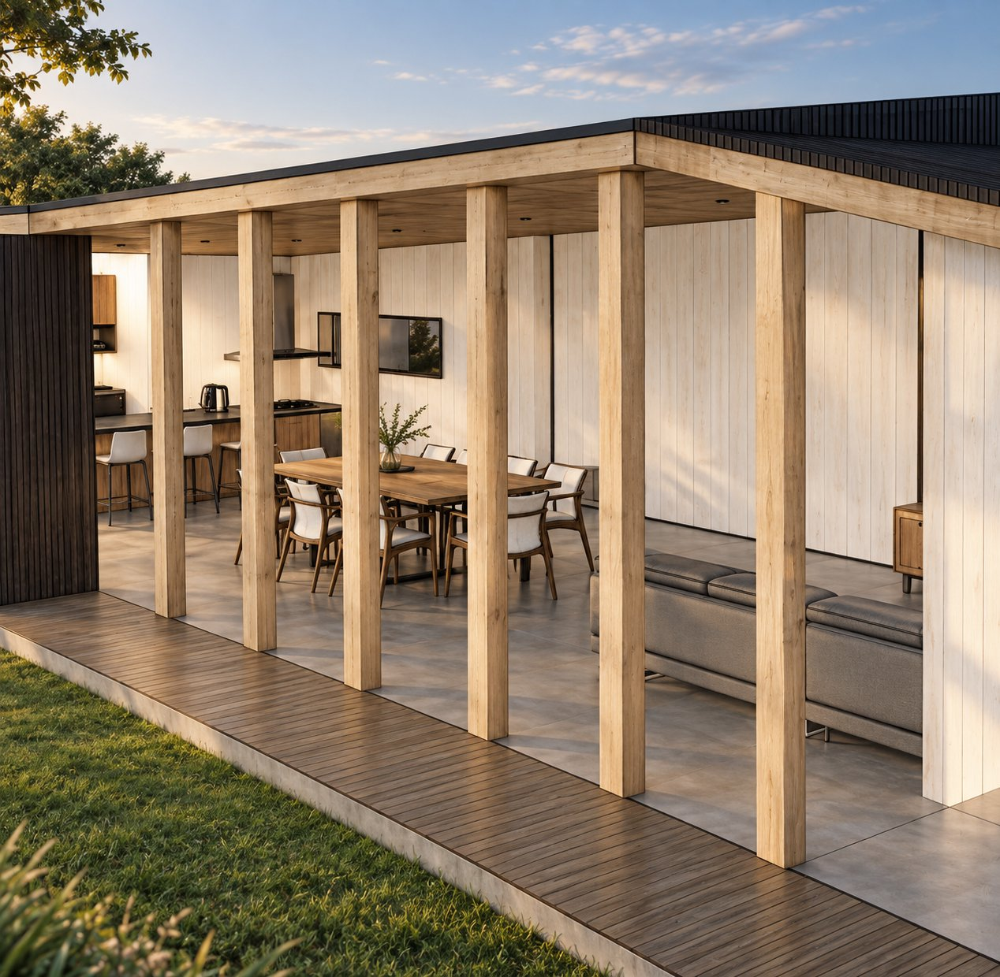
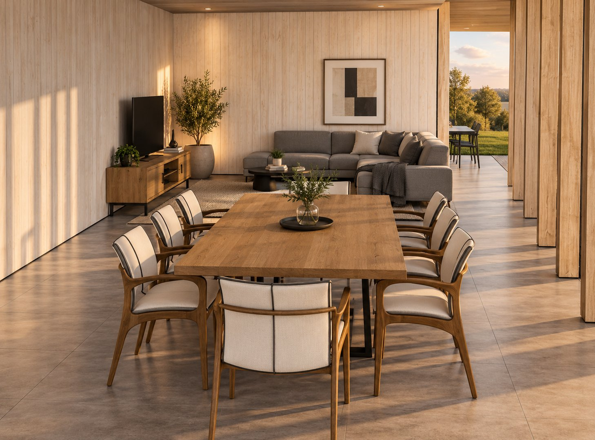
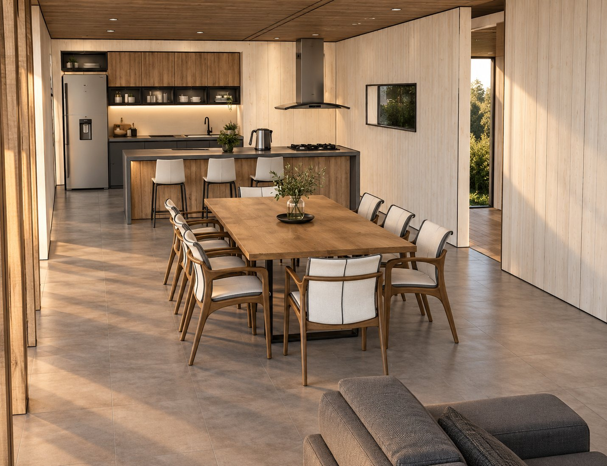
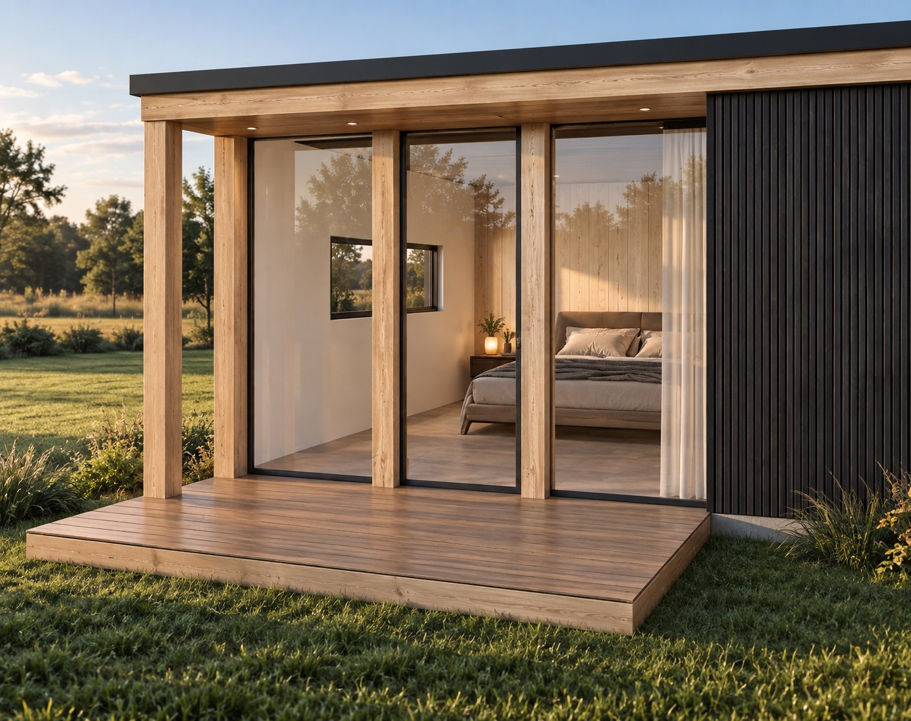

Nueva Braunau · Puerto Varas · Región de Los Lagos
Vivir el sur,
cerca de todo.
Casa contemporánea de un nivel en una parcela propia de 5.288 m², a 10–15 minutos de Puerto Varas.
Casa La Cruzada propone vivir el campo sin desconectarse de la ciudad: arquitectura contemporánea del sur, una parcela de gran calidad paisajística y una ubicación estratégica dentro de la cuenca del Lago Llanquihue.
El lugar
Una parcela propia de 5.288 m²,
con privacidad real.
Terreno de topografía plana y forma regular, rodeado de pradera amplia y árboles maduros del sur, dentro de un condominio consolidado con acceso controlado.




Arquitectura
Horizontal, cálida, abierta al paisaje.
La casa se desarrolla en un solo nivel y se abre al entorno mediante grandes superficies vidriadas conectadas con terrazas y quincho. Revestimientos oscuros y madera natural reinterpretan la arquitectura tradicional del sur de Chile, con cubiertas de baja pendiente y una relación directa entre interior y exterior.
Arquitectura: Camilo Corces
Modelo 3D
143,3 m² de programa interior
3 dormitorios, suite principal, living-comedor, cocina y 3 baños — cada espacio, a la vista.
Muros, ventanas y cerramientos
Cada elemento constructivo se despliega de forma independiente, fiel al modelo del proyecto.
Cubierta y estructura, en capas
El techo desciende y se ensambla nivel por nivel, hasta cerrar cada plano de la cubierta.
Así es Casa La Cruzada, terminada.
Planta y programa
180 m² pensados para la vida familiar.

- 3 dormitorios
- Suite principal con walking closet
- 3 baños (2 completos + 1 de visitas)
- Living y comedor integrados
- Cocina integrada
- Logia
- Quincho integrado techado
- Deck y terrazas
- Chiflonera de acceso
- Estacionamiento techado
Materialidad
Diseñada para el clima del sur.
Estructura
Fundaciones de hormigón sobre pilotes. Estructura metálica con sistema de piso en losa colaborante.
Aislación térmica
Alta aislación térmica y cubierta de alta aislación, con envolvente preparada para el clima lluvioso del sur.
Ventanas
Ventanas termopanel de alto rendimiento en toda la vivienda.
Revestimientos
Exteriores en zinc prepintado negro y madera. Interiores predominantemente en madera y terciado de terminación.



Personalización
No es diseñar desde cero. Es elegir bien.
Comprar en esta etapa permite seleccionar terminaciones dentro de alternativas ya definidas por Río Rual: revestimientos interiores, baños, closets, puertas, cocina, quincho y ciertos revestimientos exteriores. Una arquitectura ya resuelta, personalizada mediante paquetes de terminaciones cuidadosamente seleccionados.

Ubicación y conectividad
Entorno rural, conectividad real.
A 10,8 km de la Plaza de Armas de Puerto Varas, con acceso directo desde la ruta a Nueva Braunau.
Tiempos de referencia, sujetos a verificación en terreno.
Oferta de lanzamiento
Precio especial de lanzamiento.
Tasación de referencia: UF 8.132 — informe de tasación rural, Fernando Guzmán Araya, Constructor Civil UC, julio 2026. El precio de lanzamiento representa UF 1.132 bajo la tasación de referencia, aproximadamente un 13,9%.
Los valores de etapas posteriores corresponden a precios comerciales proyectados y no constituyen garantía de plusvalía.
Consultar disponibilidadRío Rual
Arquitectura, construcción y desarrollo.
Desarrollo inmobiliario con foco en la cuenca del Lago Llanquihue: viviendas contemporáneas del sur, ejecutadas con equipos profesionales locales y materialidades pensadas para el clima de la Región de Los Lagos. Creamos hogares eficientes, cómodos y en armonía con su entorno.
Preguntas frecuentes
Lo que necesitas saber antes de consultar.
¿Qué significa que la venta es "en verde"?
La casa está actualmente en construcción, con obra iniciada en julio de 2026. La compra se realiza sobre planos y renders del proyecto, antes de su recepción final.
¿Cuándo se entrega la vivienda?
La recepción está proyectada para marzo de 2027.
¿Hasta cuándo dura el precio de lanzamiento de UF 7.000?
Está disponible durante la etapa inicial de preventa, proyectada hasta octubre de 2026, sujeto a disponibilidad y condiciones de venta.
¿Puedo elegir las terminaciones de mi casa?
Sí. Comprar en esta etapa permite personalizar revestimientos interiores, baños, closets, puertas, cocina, quincho y ciertos revestimientos exteriores, dentro de alternativas previamente definidas por Río Rual.
¿Qué servicios básicos tiene la parcelación?
El condominio cuenta con acceso controlado mediante portón eléctrico, caminos interiores estabilizados, red eléctrica soterrada y abastecimiento de agua por pozo propio del condominio.
¿Las fotos son reales o renders?
Las imágenes de la vivienda son renders fotorrealistas, fieles a los planos y al modelo 3D del proyecto. Una vez recibida la obra, en marzo de 2027, se realizará una sesión fotográfica y un recorrido virtual 360° de la vivienda terminada.
¿Los precios de las etapas siguientes están garantizados?
No. Los valores de venta en verde posterior, obra avanzada y llave en mano corresponden a precios comerciales proyectados por etapa, no a una garantía de plusvalía.
¿Cómo consulto o agendo una visita a la parcela?
Escríbenos por WhatsApp al +56 9 9895 6549 o al correo casalacruzada@riorual.cl y coordinamos una visita al terreno.
Contacto
Conversemos sobre Casa La Cruzada.
Río Rual — Desarrollo Inmobiliario. Respondemos por WhatsApp, correo o llamada.